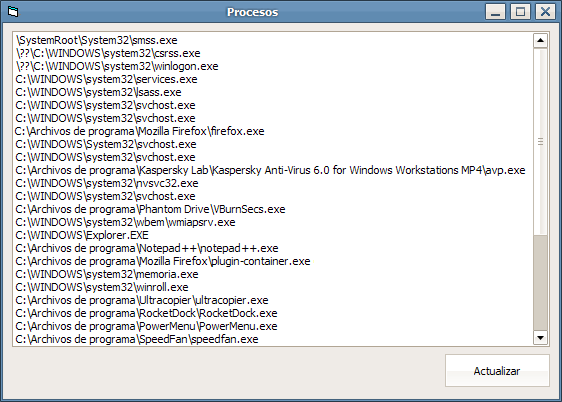

Mostrar la ruta absoluta de los programas en ejecución
Un ejemplo sencillo de un pequeño programa escrito en Visual Basic para listar y mostrar la ruta de los procesos. Para compilarlo, abra VB6 y cree un Nuevo proyecto de EXE estándar, agregue al formulario un CommandButton y un ListBox (dejar los nombres de los controles por defecto: Command1 y List1). Agregue el código fuente en el formulario Form1.frm en el visor de código, guarde el proyecto y genere el archivo Proyecto1.exe desde la pestaña Archivo y et voilà!!, rápido, fácil y para toda la famila :D
Form1.frm
Option Explicit
'PROGRAMA PARA MOSTRAR LA RUTA ABSOLUTA DE LOS PROCESOS
'Archivo: Form1.frm
'Autor: Javier Ortega
'Licencia: Creative Commons
'Declaraciones
Private Const TH32CS_SNAPPROCESS = &H2
Private Const PROCESS_QUERY_INFORMATION As Long = (&H400)
Private Const PROCESS_VM_READ As Long = (&H10)
Private Const MAX_PATH As Integer = &H104
Private Type PROCESSENTRY32
dwSize As Long
cntUsage As Long
th32ProcessID As Long
th32DefaultHeapID As Long
th32ModuleID As Long
cntThreads As Long
th32ParentProcessID As Long
pcPriClassBase As Long
dwFlags As Long
szExeFile As String * MAX_PATH
End Type
Private Declare Function CreateToolhelp32Snapshot Lib "Kernel32" ( _
ByVal lFlags As Long, _
ByVal lProcessID As Long _
) As Long
Private Declare Function Process32First Lib "Kernel32" ( _
ByVal hSnapShot As Long, _
uProcess As PROCESSENTRY32 _
) As Long
Private Declare Function Process32Next Lib "Kernel32" ( _
ByVal hSnapShot As Long, _
uProcess As PROCESSENTRY32 _
) As Long
Private Declare Function OpenProcess Lib "kernel32.dll" ( _
ByVal dwDesiredAccess As Long, _
ByVal bInheritHandle As Boolean, _
ByVal dwProcessId As Long _
) As Long
Private Declare Function EnumProcessModules Lib "psapi.dll" ( _
ByVal hProcess As Long, _
ByRef lphModule As Long, _
ByVal cb As Long, _
ByRef lpcbNeeded As Long) As Long
Private Declare Function GetModuleFileNameEx Lib "psapi.dll" Alias "GetModuleFileNameExA" ( _
ByVal hProcess As Long, _
ByVal hModule As Long, _
ByVal lpFileName As String, _
ByVal nSize As Long) As Long
Private Declare Sub CloseHandle Lib "Kernel32" ( _
ByVal hPass As Long _
)
'Botón
Private Sub Command1_Click()
Call ListaProcesos
End Sub
'Formulario principal
Private Sub Form_Load()
Form1.Caption = "Procesos"
Command1.Caption = "Actualizar"
Call ListaProcesos
End Sub
'Redimensionar controles
Private Sub Form_Resize()
If WindowState = vbMinimized Then Exit Sub
List1.Move 120, 120, Me.ScaleWidth - 240, Me.ScaleHeight - 800
Command1.Move Me.ScaleWidth - Command1.Width - 120, List1.Height + 220
End Sub
'Función para listar los procesos
Private Sub ListaProcesos()
Dim PE As PROCESSENTRY32
Dim hSnap As Long
Dim Result As Boolean
Dim hProcess As Long
Dim FileName As String * MAX_PATH
PE.dwSize = Len(PE)
List1.Clear
hSnap = CreateToolhelp32Snapshot(TH32CS_SNAPPROCESS, 0)
Result = Process32First(hSnap, PE)
Do While Result
hProcess = OpenProcess(PROCESS_QUERY_INFORMATION Or PROCESS_VM_READ, False, PE.th32ProcessID)
If Not EnumProcessModules(hProcess, 0, 0, 0) = 0 Then
GetModuleFileNameEx hProcess, 0, FileName, MAX_PATH
List1.AddItem FileName
End If
CloseHandle hProcess
Result = Process32Next(hSnap, PE)
Loop
CloseHandle hSnap
End Sub
Javi